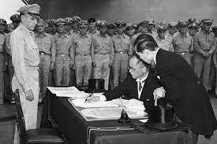
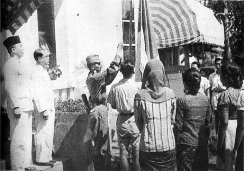
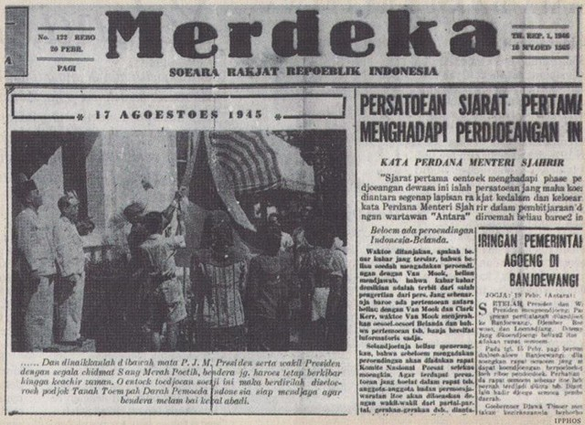
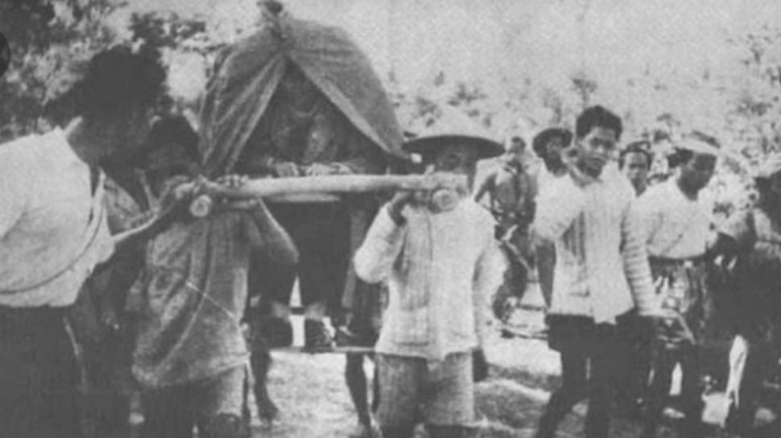

1. Akhir Perang Asia Pasifik

Perang Dunia II di kawasan Asia Pasifik berawal dari peristiwa pemboman pangkalan laut Amerika Serikat di Pearl Harbor, Hawaii oleh pasukan Jepang pada 7 Desember 1941. Basis militer Amerika Serikat dan sekutunya di Asia Pasifik dapat direbut oleh Jepang seperti Guam, Wake, Bismark, Hongkong, Indocina, Filipina, Birma, Malaya, Singapura, Thailand, Indonesia.
Jepang mabuk kemenangan dan menduga kekuatan AS dan sekutunya telah lumpuh. AS dan sekutunya bisa bangkit kembali setelah menyusun kekuatan baru di Australia. Jepang berusaha menguasai Australia tetapi gagal dalam pertempuran di Laut Karang pada 7-8 Mei 1942. Akibatnya, satu per satu pangkalan perang Jepang dapat direbut Sekutu. Pangkalan perang Jepang di Kwajelein jatuh pada Februari 1944, di Guam jatuh pada 19 Juni 1944, dan di Saipan pada 9 Juli 1944 serta pangkalan perang lainnya.
Kekalahan perang di Pasifik menimbulkan krisis kabinet di Jepang. Perdana Menteri Jenderal Tojo digantikan oleh Jenderal Koiso Kuniaki. Perdana Menteri Koiso Kuniaki mengikutsertakan kekuatan pribumi seperti membentuk kesatuan militer dan semi militer seperti Heiho, Peta, Seinendan, Keibodan, dan Fujinkai di Indonesia untuk berperang. Untuk memikat hati rakyat Indonesia, Perdana Menteri Koiso menjanjikan kemerdekaan di kemudian hari, pada 7 September 1944. Pada tanggal 29 April 1945, Jepang menyetujui terbentuknya Dokuritsu Junbi Cosakai (BPUPKI) sebagai awal realisasi janji kemerdekaan yang diketuai oleh dr Radjiman Wediodiningrat dengan tugas utama yakni mempelajari dan menyusun rencana pembangunan pemerintahan Indonesia merdeka.
Dalam situasi kritis, Jepang mengadakan rapat di Singapura pada akhir bulan Juli 1945 dan diputuskan Jepang akan memerdekakan Indonesia secara bertahap, yaitu Jawa pada 7 September 1945 dan pulau lainnya setelahnya. Janji kemerdekaan ini ditentang kaum pergerakan anti-jepang di Indonesia.
Pada tanggal 7 Agustus 1945, panglima tentara Jepang di Asia Tenggara Jenderal Terauchi setuju terbentuknya Dokuritsu Junbi Inkai (PPKI) menggantikan BPUPKI yang dianggap telah selesai menjalankan tugasnya. PPKI bertugas menyiapkan pemindahan kekuasaan dari pihak pemerintah pendudukan Jepang kepada bangsa Indonesia.
Pada tanggal 9 Agustus 1945, Jenderal Terauchi memanggil tiga tokoh PPKI (Ir. Soekarno, Drs. Mohammad Hatta, dan dr. Radjiman Wediodiningrat) ke markas besarnya di Dalat, Vietnam Selatan. Kehadiran mereka di Dalat berkenaan dengan pelantikan PPKI secara simbolis.
Tiga hari setelah pertemuan tersebut, Jenderal Terauchi memberitakan bahwa kekaisaran Jepang telah memutuskan untuk memberikan kemerdekaan kepada bangsa Indonesia pada 24 Agustus 1945. Sebelum pulang ke tanah air, Soekarno dkk bersinggah di Singapura dan bertemu dengan tokoh-tokoh PPKI dari Sumatra (Moh, Amir, Teuku Hasan, dan Abdul Abas). Dalam pertemuan singkat tersebut, mereka bersama-sama memperkirakan kekalahan Jepang akan terjadi dalam waktu relatif singkat. Soekarno dkk pulang ke tanah air pada tanggal 14 Agustus 1945.
Pada 6 dan 9 Agustus 1945 pesawat pembom B29 Amerika Serikat menjatuhkan bom atom di kota Hiroshima dan Nagasaki. Ribuan rakyat Jepang tewas dan berbagai fasilitas kehidupan di kedua kota tersebut rusak berat. Akibatnya, Jepang mengajukan permintaan damai pada 10 Agustus 1945. Permintaan tersebut ditolak sekutu dan hanya mau menerima penyerahan tanpa syarat dari pihak Jepang. Akhirnya pada 15 Agustus 1945 Kaisar Jepang Hirohito memerintahkan penghentian permusuhan terhadap sekutu.
Jepang berusaha menutupi berita tersebut tetapi gagal dan terdengar oleh Sutan Syahrir. Syahrir mendesak Soekarno-Hatta yang baru tiba di tanah air untuk segera memproklamasikan kemerdekaan Indonesia. Soekarno-Hatta belum dapat menanggapi desakan itu dengan alasan berita kekalahan Jepang masih simpang siur dan kekuatan Jepang di Indonesia masih kuat dan utuh. Akhirnya Jepang menyerah tanpa syarat kepada sekutu pada 15 Agustus 1945 dan terdapat kekosongan kekuasaan di Indonesia. Para tokoh pejuang kemudian mengadakan beberapa pertemuan untuk merumuskan langkah-langkah penting dalam mempersiapkan kemerdekaan Indonesia.
Persiapan kemerdekaan Indonesia:
- Menentukan saat yang tepat untuk memproklamasikan kemerdekaan.
- Menentukan tokoh yang akan memproklamasikan kemerdekaan.
- Menyusun teks proklamasi
- Menentukan bentuk pelaksanaan proklamasi yang tepat.
- Mempersiapkan perlengkapan negara yang kelak diperlukan
2. Peristiwa Rengasdengklok
Para pemuda dipimpin oleh Chaerul Saleh (Golongan muda) mengadakan pertemuan di Gedung Lembaga Bakteriologi di Jl. Pegangsaan Timur No. 17 Jakarta (sekarang Fakultas Kesehatan Masyarakat, UI) pada tanggal 15 Agustus 1945 pukul 20.00 WIB
Hasil pertemuan tersebut:
- Mendesak Soekarno & Hatta untuk memproklamasikan kemerdekaan saat itu juga
- Menunjuk Wikana, Darwis, dan Subadio untuk menemui Soekarno & Hatta
untuk menyampaikan hasil rapat + catatan bahwa kemerdekaan tidak diproklamasikan melalui PPKI
- Membagi tugas pada para mahasiswa, pelajar dan pemuda di seluruh Jakarta untuk merebut kekuasaan dari tangan Jepang
Pukul 20.00 WIB, Wikana & kawan-kawan menemui Ir. Soekarno di kediamannya Jl. Pegangsaan Timur No.56 Jakarta, mengancam Soekarno dengan perkataan bahwa kemerdekaan harus segera diproklamasikan oleh Soekarno pada 16 Agustus 1945. 16 Agustus 1945 pukul 4.00 WIB Soekarno & Hatta dibawa para pemuda ke Rengasdengklok dipimpin oleh Syodanco Singgih dengan tujuan menjauhkan kedua tokoh pejuang tersebut dari tekanan dan pengaruh Jepang.
Rengasdengklok adalah tempat yang dipilih untuk ‘mengamankan Soekarno & Hatta karena perhitungan militer. Karena letak geografisnya, gerakan tentara Jepang dari Jakarta, Bandung, dan Jawa Tengah yang menuju Rengasdengklok akan segera diketahui.
Pada waktu yang sama, di Jakarta dilangsungkan pertemuan antara golongan tua yang diwakili Mr. Ahmad Soebardjo dan golongan muda yang diwakili Wikana. Di pertemuan ini disepakati bahwa proklamasi kemerdekaan Indonesia harus dilakukan di Jakarta.
Ahmad Soebardjo segera menjemput Soekarno & Hatta di Rengasdengklok. Keberangkatan mereka diantar Yusuf Kunto sebagai wakil pemuda dan Sudiro selaku sekretaris pribadinya. Dalam pertemuan dengan para pemuda di Rengasdengklok, Ahmad Soebardjo memberi jaminan dengan taruhan nyawanya bahwa proklamasi kemerdekaan akan dilaksanakan pada 17 Agustus 1945.
Kelompok nasionalis pejuang kemerdekaan Indonesia terdiri dari 2 golongan yang disebutkan di atas;
- Golongan tua yang terdiri dari; Ir. Soekarno, Drs. Moh. Hatta, Mr. Ahmad Soebardjo, Mr. Moh. Yamin, dan Mr. Iwa Kusumasumantri
- Golongan muda yang bersikap lebih agresif terdiri dari; Sukarni, Adam Malik, dr. Muwardi, Wikana, Chaerul Saleh, dan B.M. Diah.

16 Agustus 1945 pukul 23.00 WIB, rombongan Soekarno & Hatta tiba di Jakarta. Tempat yang awalnya direncanakan adalah Hotel Des Indes (Duta Indonesia), namun tidak jadi karena pihak hotel tidak mengizinkan kegiatan apapun saat tengah malam. Hotel yang terletak di Jalan Gajah Mada ini pada pagi hari sebelumnya juga direncanakan pertemuan anggota PPKI, tetapi pihak jepang melarangnya.
Pada akhirnya, Ahmad Soebardjo berhasil meminjam tempat seorang perwira angkatan Laut Jepang bernama Laksamana Tadashi Maeda. Rumah Maeda terletak di Jl. Miyakodori (Nassau Boulevard) no.1, yang dikenal juga sebagai Jl. Imam Bonjol No.1 Jakarta. Perumusan naskah Proklamasi Kemerdekaan mengambil tempat di ruang makan Maeda. Tiga pemuda yaitu Sukarni, Sudiro, dan B.M. Diah menyaksikan Soekarno, Moh. Hatta dan Ahmad Soebardjo membahas perumusan naskah proklamasi.
Kalimat pertama rumusan itu merupakan buah pikir Soekarno dan Ahmad Soebardjo yang diambil dari teks pembukaan Undang-undang Dasar 1945, sedangkan kalimat terakhir merupakan sumbangan pikiran Moh. Hatta. Teks Proklamasi yang paling awal dibuat ditulis tangan oleh Soekarno.
17 Agustus 1945 pukul 04.00 WIB, Soekarno membacakan rumusan naskah proklamasi kemerdekaan yang langsung disetujui oleh hadirin. Sukarni lantas mengusulkan agar yang menandatangani naskah proklamasi cukup dua orang saja, yakni Soekarno & Hatta. Mereka ditunjuk sebagai wakil atas nama Bangsa Indonesia, selayaknya mereka telah dikenal sebagai pemimpin utama bangsa.
Soekarno meminta Sayuti Melik untuk mengetik naskah proklamasi berdasarkan tulisan tangan Soekarno. Teks yang diketik Sayuti Melik merupakan teks yang asli atau resmi karena ditandatangani oleh Soekarno & Hatta.

1. Pernyataan Proklamasi Kemerdekaan Indonesia
17 Agustus 1945 sekitar pukul 04.30 WIB, Para tokoh pejuang kemerdekaan berhasil merampungkan pekerjaan mempersiapkan proklamasi kemerdekaan.
Persiapan upacara proklamasi tersebut sibuk dan begitu padat oleh masyarakat. Dr. Muwardi meminta Syodanco Latief Hendraningrat berjaga-jaga di sekitar rumah Ir. Soekarno untuk menjaga keamanan dan ketertiban selama upacara proklamasi.
Menjelang pukul 10.00 WIB, hampir semua tokoh pejuang telah hadir di Pegangsaan Timur, seperti dr. Buntaran Martoatmodjo, Mr. A.A. Maramis, Mr. Latuharhary, Abikusno Cokrosuyoso, Anwar Cokroaminoto, Harsono Tjokroaminoto, Otto Iskandardinata, Ki Hajar Dewantara, Sam Ratulangi, K.H. Mas Mansur, Mr. Sartono, Sayuti Melik, Pandu Kartawiguna, M. Tabrani, dan A.G. Pringgodigdo.
Hari sudah siang, para pemuda terus mendesak dr. Muwardi agar mengingatkan Soekarno untuk memproklamasikan kemerdekaan secepatnya. Namun Soekarno menolak permintaaan dr. Muwardi untuk segera memproklamasikan kemerdekaan dengan alasan dia tidak mau memproklamasikan kemerdekaan tanpa hadirnya Moh Hatta. Moh. Hatta pun hadir 5 menit sebelum acara.
Upacara proklamasi kemerdekaan berlangsung tanpa protokol selama sekitar 1 jam. Upacara dimulai dengan Soekarno mengucapkan pidato pendahuluan sebelum membacakan teks proklamasi kemerdekaan. Acara dilanjutkan dengan pengibaran sang saka Merah Putih yang dijahit oleh Ibu Fatmawati, istri Soekarno. Hadirin pun mengiringi penaikan bendera dengan menyanyikan Lagu Indonesia Raya karya Wage Rudolf Supratman.
Peristiwa proklamasi kemerdekaan telah menjadi momentum puncak perjuangan bangsa Indonesia. Makna-makna yang terkandung dari peristiwa tersebut;
Cita-cita bangsa Indonesia dalam memperoleh kemerdekaan dan membentuk negara bangsa telah tercapai.
Bangsa Indonesia telah bebas dari cengkraman negara-negara penjajah dan telah berdaulat atas tanah air dan negaranya sendiri.
Bangsa dan negara RI mulai dikenal dunia internasional dan mulai ikut serta dalam kegiatan percaturan dunia internasional.

Bahkan sebelum upacara proklamasi kemerdekaan diadakan, para pemuda di rumah Laksamana Maeda dalam pimpinan Sukarni mulai menyebarkan berita proklamasi. Para pemuda dengan semangat juang yang tinggi terus berusaha menyebarkan berita proklamasi kemerdekaan ke seluruh pulau dan daerah, dan bahkan secara internasional.
Mesir menjadi negara pertama yang mengakui kemerdekaan Indonesia, diikuti oleh negara-negara timur tengah lainnya seperti Pakistan, India, Irak, Afghanistan, Suriah, RI. Lebanon, Birma (Myanmar), Saudi Arabia, dan Yaman.
Rancangan pembentukan negara dan pemerintah Republik Indonesia telah banyak dibicarakan dalam sidang-sidang BPUPKI. PPKI sebagai satu-satunya organisasi tertinggi yang dimiliki Bangsa Indonesia sejak proklamasi kemerdekaan, melakukan kegiatan sidang untuk membentuk negara, pemerintahan, dan berbagai kelengkapannya. Secara de facto suatu negara baru terbentuk jika memenuhi 3 syarat berdirinya negara, yaitu memiliki wilayah, rakyat dan pemerintahan.
18 Agustus 1945, sidang pertama PPKI yang menghasilkan 3 keputusan;
-Mengesahkan dan menetapkan UUD RI, yang kemudian dikenal sebagai UUD 1945 - Memilih dan menetapkan Ir. Soekarno sebagai presiden dan Drs. Mohammad Hatta sebagai wakil presiden.
- Sebelum terbentuknya Majelis Permusyawaratan Rakyat (MPR), pekerjaan presiden untuk sementara waktu dibantu oleh sebuah Komite Nasional.
19 Agustus 1945, sidang kedua PPKI yang menghasilkan 2 buah keputusan;
- Menetapkan 12 Kementrian dalam lingkungan pemerintahan; Kementerian Dalam Negeri, Luar Negeri, Kehakiman, Keuangan, Kemakmuran, Kesehatan, Pengajaran, Sosial, Pertahanan, Penerangan, Perhubungan, dan Pekerjaan Umum.
- Membagi daerah Republik Indonesia dalam delapan provinsi; Sumatra, Jawa Barat, Jawa Tengah, Jawa Timur, Sunda Kecil, Maluku, Sulawesi dan Kalimantan.
- Sidang PPKI ketiga pada 22 Agustus 1945 berhasil mengambil keputusan untuk membentuk Komite Nasional Indonesia Pusat dan Daerah, Partai Nasional Indonesia, serta Badan Keamanan Rakyat.
1. Pertempuran Heroik di Surabaya (10 November 1945)

Pada 25 oktober 1945, tentara Sekutu Brigade 49 yang dipimpin Brigjen Aubertin Walter Sothern Mallaby mendarat di Surabaya untuk melucuti serdadu Jepang dan menyelamatkan tawanan Sekutu di Surabaya. Karena tujuan tersebut, mereka disambut baik oleh pemerintah dan rakyat Jawa Timur, dan hubungan baik itu berlanjut pada sebuah pertemuan di antara wakil-wakil RI dan pihak Sekutu yang menghasilkan keputusan:
a. Inggris berjanji tidak akan menyertakan tentara NICA dalam pasukannya.
b. Kedua belah pihak akan bekerja sama untuk menjamin keamanan dan ketenteraman.
c. Dibentuk Kontrak Biro agar kerja sama dapat terlaksana sebaik-baiknya.
d.Inggris hanya akan melucuti senjata Jepang.
Karena itu, pemerintah RI memperkenankan Inggris memasuki Kota Surabaya. Namun, pada 26-27 Oktober, pihak Inggris menyerbu penjara Kalisosok untuk membebaskan tawanan Belanda, lalu mereka menduduki Pangkalan Udara Tanjung Perak, Kantor Pos Besar, Gedung Bank Internatio, dan objek vital lainnya.
Tembakan gencar dari pasukan Inggris dari dalam gedung bank dibalas dengan tembakan para pemuda yang tidak kalah gencarnya. Dalam insiden tersebut, Brigjen Mallaby ditemukan tewas. Peristiwa yang terkenal dalam insiden ini adalah hancurnya mobil Mallaby akibat pertempuran.
Letjen Christison menuduh aksi pembunuhan dilakukan oleh para rakyat Surabaya dan memperingatkan agar mereka menyerah, namun para rakyat tidak mematuhi tuntutan tersebut. Kontak Biru menyatakan bahwa kematian Mallaby adalah kecelakaan, sehingga pihak Inggris mendatangkan pasukan baru dipimpin Mayjen E.C. Mansergh.
Tanggal 7 November 1945, Mansergh menulis surat kepada Gubernur R.A. Suryo yang menyatakan bahwa gubernur tidak bisa lagi menguasai keadaan seluruh kota yang telah dikuasai para perampok. Karena rakyat Surabaya telah menghalangi tugas Sekutu, Sekutu akan menduduki Kota Surabaya. Dalam surat tertanggal 9 November 1945, Gubernur Suryo membantah semua tuduhan tersebut.
Pada hari itu juga, Sekutu mengeluarkan ultimatum yang berisi:
a. Semua pimpinan dan orang-orang Indonesia di Surabaya yang bersenjata harus melapor dan meletakkan senjatanya di tempat-tempat yang telah ditentukan.
b. Segenap warga Surabaya harus menyerahkan diri dan mengangkat tangan di atas.
c. Batas waktu ultimatum adalah 10 November 1945 pukul 6 pagi WIB. Apabila tidak dihiraukan, Inggris akan menggempur Surabaya dengan kekuatan darat, laut, dan udara.
Rakyat Surabaya pun menjadi siaga membuat pertahanan di dalam kota. Komandan Pertahanan Kota Sungkono menggerakkan seluruh rakyat untuk mempertahankan kotanya. Tiga sektor pertahanan pun dibagi olehnya. Selain itu, Bung Tomo membakar semangat juang rakyat melalui radio miliknya di Jalan Mawar No. 4.
Pertempuran tersebut pecah pada hari itu juga. Namun dalam masalah persenjataan, pertempuran tersebut tidak seimbang, dan ribuan orang menjadi korban. Untuk memperingati hari itu di Surabaya, pemerintah RI menetapkan 10 November 1945 sebagai Hari Pahlawan.
2. Pertempuran Bojongkokosan
Salah satu tugas Sekutu di Indonesia adalah membebaskan tawanan perangnya yang dikenal sebagai Allied Prisoners of War and Internees (APWI). Berkaitan dengan itu, Sekutu mengirimkan perbekalan dari Jakarta ke kamp tawanan di daerah-daerah. Pengiriman tersebut menggunakan rute Bogor-Sukabumi-Cianjur. Dalam perundingan antara RI, Belanda, dan Sekutu di Jakarta, disepakati bahwa pelaksanaan pengiriman melibatkan Tentara Keamanan Rakyat (TKR).
Sekutu ternyata melanggar dengan mengirim perbekalan untuk APWI di Bandung tanpa melibatkan TKR. Perdana Menteri Sutan Syahrir pun mengkoordinasikan masalah tersebut dengan Komandemen Jawa Barat dan Walikota Praja Sukabumi, Mr. Samsudin. Disepakati bahwa konvoi Sekutu yang melewati rute Bogor-Sukabumi-Cianjur harus dihadang.
Upaya penghadangan konvoi Sekutu dilaksanakan dengan matang, dengan mengkonsolidasi pasukan, melakukan kerja sama dengan laskar-laskar rakyat, lalu dibuatnya peta penyerangan dalam 4 titik pertempuran sepanjang 81 kilometer mulai dari Cigombong sampai Ciranjang.
Titik pertempuran pertama dipusatkan pada Bojongkokosan. Tugas penghadapan pertama diserahkan kepada batalyon I. Pada Minggu 9 Desember 1945, pos TKR di Ciawi memberitakan pada pasukan Bojongkokosan bahwa konvoi Sekutu sedang dalam perjalanan ke Bandung. Konvoi itu terdiri dari puluhan truk yang dikawal 8 tank, 3 pesawat Thunderbolt, dan 1 Mosquito. Mereka tiba di Bojongkokosan sekitar pukul 16.30 dan terpaksa berhenti karena barikade-barikade yang menghadang.
Dalam keadaan panik, para anggota konvoi mendapat serangan tipuan yang semula diremehkannya. Para pejuang tidak lama melemparkan granat tangan, molotov cocktail, dan serentetan tembakan di atas dua tebing antara ruas jalan. Hal itu terjadi dalam beberapa jam sehingga pasukan Sekutu tidak dapat menguasai keadaan.
Ketika hujan mereda, pesawat tempur Inggris mulai menembak balik dengan persenjataannya. Karena kehabisan mesiu, pasukan pejuang terpaksa mundur. Konvoi Sekutu dapat melakukan perjalanannya ke arah Sukabumi setelah tidak kurang 50 tentara tewas dan 100 lebih cedera.
Markas besar Sekutu pun mengeluarkan protes keras terhadap Perdana Menteri Sutan Syahrir, tapi ia tidak menghiraukannya.

Pada 9 Oktober 1945, pasukan Sekutu yang dipimpin Brigjen T.E.D. Kelly mendarat di Medan, disertai NICA yang dipersiapkan untuk mengambil alih pemerintahan. Sebelumnya, Belanda juga sudah mengirim pasukannya yang dipimpin Raymond Westerling. Karena kedatangan tentara Sekutu dan NICA, para pemuda Medan membentuk TKR Sumatra Timur yang dipimpin Achmad Tahir.
Semula, Pemerintah RI di Medan bersikap lunak terhadap Sekutu, karena mereka menghormati tugas Sekutu yang akan melucuti tentara Jepang. Tentara Sekutu diperbolehkan menempati hotel-hotel di Medan, dan sebagian juga ditempatkan di kota-kota lain seperti Binjai, Tanjung Morawa, dan sebagainya.
Namun, pada 10 Oktober 1945, tentara Sekutu mendatangi tawanan Belanda dan malah membebaskan tawanan. Mantan tawanan itu langsung dipersenjatai dan membentuk Medan KNIL Batalyon.
Para mantan tawanan bersikap arogan dan sering memprovokasi, yang akhirnya melahirkan insiden di berbagai tempat. Insiden pertama adalah di hotel Jalan Bali Medan pada 13 Desember 1945, dimana seorang mantan tawanan Belanda merampas dan menginjak-injak lencana merah putih yang dipakai seseorang yang ditemuinya. Para pemuda di Medan pun merasa marah, dan mereka pun berusaha menyerang dan merusak hotel tersebut.
Perselisihan ini menjalar ke Pematang Siantar dan Berastagi. Karena itu, pada 18 Oktober 1945, Brigjen Kelly mengeluarkan ultimatum yang melarang rakyat membawa senjata, serta semua senjata harus diserahkan. NICA pun meningkatkan aksi-aksi terornya. Pemerintah RI pun menghentikan dukungan dan tidak lagi menjamin keselamatan tentara Sekutu di Medan.
Pada 1 Desember 1945, Sekutu memasang papan-papan bertuliskan Fixed Boundaries Medan Area sebagai batas kekuasaannya, karena korban di pihak Sekutu semakin banyak. Tanggal 10 Desember 1945, Sekutu dan NICA menyerang seluruh daerah Medan, sehingga Medan pun sempat ditaklukkan. Gubernur, walikota, dan TKR harus menyingkir ke Pematang Siantar.
Setelah dilangsungkan pertemuan para komandan TKR di Tebingtinggi pada 10 Agustus 1946, perlawanan rakyat pun semakin gencar. Para pejuang menggabungkan diri dalam Komando Resimen Laskar Rakyat Medan Area. Serangan mereka merepotkan pertahanan Sekutu dan NICA.
4. Pertempuran Ambarawa (12-15 Desember 1945)
Brigadir Jenderal Bethel dan tentara Sekutu-nya mulai mendarat di Semarang pada 20 Oktober 1945. Sebagian dari mereka pergi ke Magelang, dan disambut baik oleh rakyat sekitar. Akan tetapi, di antara tentara Sekutu juga ada tentara NICA. Mereka pun secara sepihak membebaskan interniran Belanda dan melakukan kekacauan di dalam kota.
Terjadilah insiden bersenjata yang meluas, namun pihak Sekutu terkepung dan nyaris terkalahkan. Pada saat itu, Presiden Soekarno menenangkan para pemuda, sehingga Sekutu dapat melarikan diri. Namun ketika tentara Sekutu secara diam-diam kabur dari Magelang ke Ambarawa, ternyata mereka mencoba menduduki dua desa di sekitar Ambarawa.
Bala bantuan TKR dari Banyumas, Salatiga, Surakarta, dan Yogyakarta pun datang untuk membebaskan desa-desa tersebut. Pertempuran kembali berkobar di sepanjang rel kereta api Ambarawa. Dalam pertempuran tersebut, Letnan Kolonel Isdiman, Komandan Resimen Banyumas, gugur.
Kolonel Soedirman, Panglima Divisi V/Banyumas pun turun langsung ke medan pertempuran. Ia berkata bahwa Ambarawa memiliki posisi strategis, bila musuh tidak berhasil diusir, maka musuh akan menjadikan Ambarawa sebagai pancangan untuk merebut wilayah lain di Jawa Tengah.
Pada 12 Desember 1945 sekitar pukul 04.30 WIB, pasukan Indonesia menyerang. Jalan di antara Ambarawa-Semarang berhasil dikuasai pejuang dan didirikan barikade.
Pertempuran Ambarawa berlangsung selama 3 hari. Sekutu akhirnya terpaksa mundur ke Semarang. Peristiwa kemenangan perang di Ambarawa pada 15 Desember 1945 diabadikan sebagai Hari Infanteri.

Berita Proklamasi RI terlambat sampai di Sulawesi. Para pemuda di Manado seperti G.E. Dauhan, Tinder, Dr. Sendukh, dan Kusno Dhanupoyo pun berupaya mengambil alih kekuasaan dari tangan Jepang. Jepang menyerahkan kekuasaannya dalam sebuah upacara di Tondano, dan pada 21 Agustus 1945, bendera merah putih berkibar di Sulawesi Utara.
Tidak lama, Sekutu (Australia) dan NICA tiba di Manado. Mereka melarang pengibaran bendera merah putih dan mempersenjatai KNIL yang sebelumnya menjadi bekas tawanan Jepang. Organisasi perjuangan Barisan Pemuda Nasional Indonesia (BPNI) pun langsung dibentuk.
Pada akhir tahun 1945, tentara Australia meninggalkan Sulawesi Utara dan menyerahkan kekuasaan kepada NICA. NICA pun menangkapi pemimpin rakyat. Pemimpin rakyat yang masih bebas pun berusaha untuk menegakkan pemerintahan RI. Mereka bekerja sama dengan anggota KNIL pro-Republik. Setelah rapat rahasia, disepakati bahwa penyerangan merebut kekuasaan akan dilaksanakan pukul 02.00 tanggal 14 Februari 1946. Namun rapat ini diketahui NICA, sehingga semua anggota KNIL pro-RI dikumpulkan dan semua senjata disita.
Pada 14 Februari 1946, 8 orang anggota KNIL pro-RI menyerang pengawal NICA yang berada di tangsi Teling dengan senjata tanpa peluru mereka. Para tawanan dibebaskan, dan pasukan Belanda ditangkapi.
Para pejuang membentuk pemerintahan RI di Sulawesi Utara dengan B.W. Lapian sebagai residennya. Dibentuk pula Tentara Republik Indonesia dengan komandan militernya Ch.Ch. Taulu. Semua kompi KNIL dilebur ke dalam TRI.
6. Bandung Lautan Api (23 Maret 1946)
Pasukan Sekutu memasuki Kota Bandung pada Oktober 1945, dimana para pejuang sedang melaksanakan pemindahan kekuasaan Jepang dengan merebut senjatanya. Tentara Sekutu langsung mengeluarkan ultimatum yang berisi:
1. Meminta paksa semua senjata yang diperoleh dari tentara Jepang.
2. Kota Bandung bagian utara dikosongkan pihak Indonesia selambat-lambatnya tanggal 29 November 1945.
Perintah itu dikeluarkan dengan dalih menjaga keamanan kota, namun permintaan tersebut tidak dihiraukan oleh rakyat.
Pihak Sekutu pun menyerang di Pasar Baru, Lengkong Besar, Cicadas, Andir dan sekitar Gedung Sate.
Sekutu mengeluarkan ultimatum kedua pada 23 Maret 1946, yang berisi tuntutan agar Bandung dikosongkan militer dan pemerintah RI paling lambat pukul 24.00 menjelang 24 Maret 1946. Sehari sebelumnya, dateng perintah yang sama dari pemerintah RI di Jakarta, namun Markas TRI di Yogyakarta memerintahkan agar Bandung tidak dikosongkan. Hal ini menyebabkan kebingungan di antara rakyat Bandung.
Setelah pertimbangan yang matang, TRI dan rakyat Bandung mematuhi perintah dari Jakarta dan meninggalkan kotanya. Namun sebelum kepergiannya, para pejuang melancarkan serangan kepada Sekutu, lalu membumihanguskan Bandung bagian selatan. Karena itu, peristiwa ini dikenal sebagai Bandung Lautan Api.
1. Kedatangan Sekutu dan NICA di Indonesia

Setelah Jepang dikalahkan, Komando Sekutu Asia Tenggara di Singapura mengutus 7 perwira Inggris di bawah pimpinan Mayor A.G. Greenhalgh ke Indonesia. Mereka tiba pada 8 September 1945 dengan tugas melaporkan keadaan Indonesia menjelang pendaratan rombongan Sekutu.
16 September 1945, rombongan perwakilan Sekutu mendarat di Tanjung Priok dengan kapal Cumberland, dipimpin oleh Laksamana Muda W.R. Patterson dan diikuti C.H.O. Van der Plas yang mewakili Dr. H.J. van Mook, kepala NICA.
Sekutu menugaskan sebuah komando khusus untuk mengurus Indonesia, yaitu Allied Forces Netherlands East Indies (AFNEI), yang dipimpin oleh Letjen. Sir Philip Christison. AFNEI mulai mendarat di Jakarta pada 29 September 1945, lalu ditugaskan di Sumatra dan Jawab, sedangkan daerah Indonesia lainnya diserahkan pada Angkatan Perang Australia.
Tugas-tugas AFNEI adalah:
1. Menerima penyerahan kekuasaan dari tangan Indonesia.
2. Membebaskan para tawanan perang dan interniran Sekutu.
3. Melucuti dan memulangkan tentara Jepang.
4. Memulihkan keamanan dan ketertiban.
5. Mencari dan mengadili para penjahat perang.
Awalnya, kedatangan Sekutu disambut baik, namun karena akhirnya diketahui bahwa ada orang-orang NICA, sikap bangsa Indonesia pun berubah menjadi curiga dan bermusuhan. Ditambah, NICA mempersenjatai bekas anggota KNIL, dan satuan-satuan KNIL yang telah dibebaskan Jepang bergabung dengan tentara NICA. NICA dan KNIL yang didukung Inggris (Sekutu) kemudian melancarkan provokasi dan teror terhadap para pemimpin nasional, sehingga pertempuran pun terjadi di beberapa daerah.
2. Agresi Militer Belanda ke Republik Indonesia
a. Agresi Militer I Belanda (21 Juli 1947 - 4 Agustus 1947)
Pada 21 Juli 1947, Belanda melancarkan serangan secara serentak terhadap Pulau Jawa dan Sumatra dibawah pimpinan seorang mantan perwira KNIL, Letnan Jenderal Simon M. Spoor. Pihak Belanda menyebut aksi agresinya “Operasi Produk” karena serangan pertamanya ditujukan pada sasaran yang bersifat ekonomis.
Belanda berhasil dengan cepat dan tanpa kesusahan menguasai Jakarta dan kota-kota penting di Jawa Barat, Jawa Tengah, Jawa Timur dan Sumatra dengan alasan:
1. Belanda memiliki senjata yang lengkap dan modern, sedangkan tentara RI hanya menggunakan sisa-sisa senjata Jepang dan Belanda.
2. Pasukan RI terpencar-pencar akibat agresi Belanda.
3. Pasukan RI banyak kehilangan koordinasi dengan kesatuan atau pimpinannya setelah jalur komunikasi diputus Belanda.
4. Sebagian besar rakyat belum sepenuhnya dapat bekerja sama mendukung tentara RI untuk bersama menghalau musuh.
Tentara RI mulai melakukan konsolidasi dan berusaha membangun daerah pertahanan serta menerapkan sistem gerilya. Kekuasaan dan gerakan Belanda pun berhasil dibatasi di kota-kota besar saja. Mengetahui agresi militer ini, India dan Australia mengajukan usul agar masalah Indonesia dibicarakan dalam Dewan Keamanan PBB. Pada 1 Agustus 1947, Dewan Keamanan PBB memerintahkan penghentian tembak-menembak, dan tiga hari kemudian, Indonesia dan Belanda mengumumkan gencatan senjata, yang merupakan akhir dari agresi militer Belanda yang pertama.
b. Agresi Militer Belanda (19 Desember 1948-28 Januari 1949)
Dimulai pada 19 Desember 1948 di bawah koordinasi Dr. Bell. Belanda menyerang pangkalan udara Maguwo dengan pasukan lintas udaranya, lalu beralih ke ibu kota RI di Yogyakarta.
Belanda berhasil menawan presiden, wakil presiden, dan pejabat tinggi lainnya. Presiden Soekarno diterbangkan ke Prapat, lalu ke Bangka, sedangkan Wakil Presiden Hatta langsung ditawan di Bangka. Lalu Belanda menyiarkan berita kepada dunia bahwa RI sudah tidak ada dan perlawanan TNI sama sekali tak berarti.
Namun, sebelum para pemimpin ditangkap, Presiden Soekarno sempat memimpin sidang kabinet singkat, yang memiliki hasil:
1. Pemerintah RI memberikan mandat melalui radiogram kepada Menteri Kemakmuran Mr. Syafruddin Prawiranegara untuk membentuk Pemerintahan Darurat Republik Indonesia (PDRI) di Bukittinggi, Sumatra.
2. Presiden dan wakil presiden tinggal di dalam kota agar tetap dekat dengan KTN dengan risiko ditawan Belanda.
3. Pimpinan TNI akan menyingkir ke luar kota untuk melaksanakan perang gerilya dengan membentuk wilayah komando di Jawa dan Sumatra.
Agresi militer ini menyebabkan Belanda dinilai mengganggu ketertiban dan perdamaian dunia, serta dianggap tidak menghormati persetujuan yang telah dibuat.
Dalam pertemuan tanggal 28 Januari 1949, Dewan Keamanan PBB mengeluarkan resolusi yang memerintahkan penghentian operasi ini dan semua aktivitas gerilya RI.

Akhirnya Sekutu mengajak Belanda untuk mengakhiri perang dan mengadakan gencatan senjata. Sekutu, Belanda, dan Indonesia pun melakukan perundingan di Linggajati pada 10-15 November 1946. Penandatanganan persetujuan Linggajati berlangsung pada 25 Maret 1947.
Namun, karena tindakan mencurigakan dari Belanda, para pemimpin republik yang mulai curiga pun memerintahkan Panglima Soedirman dan Jenderal Oerip Soemohardjo untuk menginstruksikan tentara TI untuk mempertahankan kubu-kubu di sekitar daerah yang diduduki Belanda.
Pada 21 Juli 1947, Belanda melancarkan agresi militer pertama ke daerah Sumatra dan Jawa. Para pemimpin tentara segera mempersiapkan taktik gerilya, yang memiliki ciri-ciri:
a. Menghindari perang terbuka.
b. Menghantam musuh secara tiba-tiba.
c. Menghilang di tengah lebatnya hutan atau kegelapan malam.
d. Menyamar sebagai rakyat biasa.
Taktik gerilya ini terbukti berhasil dan membuat pasukan Belanda kewalahan karena tidak menentunya serangan oleh tentara Indonesia. Belanda pun hanya menguasai kota-kota besar dan jalan raya.
19 Desember 1948, Belanda melancarkan agresi militer kedua. Panglima Besar Jenderal Soedirman memerintahkan tentara RI ke luar kota untuk bergerilya. Ia juga memutuskan untuk tetap memimpin walau saat itu ia dalam keadaan sakit TBC. Taktik gerilya memerlukan perpindahan-perpindahan posisi. Jenderal Soedirman pun dalam keadaan sakitnya, menjelajahi wilayah gerilya di daerah selatan Yogyakarta, Keresidenan Surakarta, Madiun dan Kediri sambil ditandu.

Sebulan setelah agresi militer kedua oleh Belanda, tentara RI mulai melancarkan pukulan balik terhadap Belanda. Taktik penyerangan Indonesia adalah sebagai berikut:
a. Memutus garis komunikasi Belanda seperti kawat telepon, jalan kereta api, dan menyerang konvoi Belanda.
b. Para lurah menggerakkan rakyat di daerah masing-masing untuk membantu TNI. Bantuan berupa penyampaian berita, memberantas mata-mata, dan menyesatkan musuh.
Belanda harus memperbanyak pos-pos di sepanjang jalan-jalan besar. Kekuatan pasukan mereka pun terpencar pada ribuan pos di luar kota. Setelah itu, pasukan RI mulai mengadakan penyerangan terhadap kota-kota. Puncak serangan ini adalah pada 1 Maret 1949 yang dikenal dengan sebutan Serangan Umum. Inisiatif serangan ini bermula dari Sri Sultan Hamengkubuwono IX ketika mendengar berita dari siaran radio (Voice of America, BBC dan ABC) bahwa Dewan Keamanan PBB akan membicarakan masalah Indonesia pada bulan itu. Ia berpendapat bahwa RI perlu membuat suatu kejutan yang dapat membuka pandangan dunia terhadap perjuangan Indonesia.
Sri Sultan mengirim surat kepada Panglima Besar Soedirman untuk perizinan diadakannya serangan umum. Panglima Besar Soedirman mengatakan agar ia berhubungan langsung dengan Letkol. Soeharto (Komandan Brigade 10 Daerah Wehrkreise III Yogyakarta), dan kedua tokoh itu menyusun rencana serangan umum kepada pihak Belanda di wilayah Yogyakarta yang saat itu dipimpin oleh Kolonel van Langen. Wilayah serangan dibagi dalam lima sektor, yaitu barat, selatan dan timur, utara, dan kota.
Serangan Umum dilaksanakan pukul 6 pagi bersamaan dengan dibunyikannya sirene tanda jam malam berakhir. Belanda pun terkejut dan akhirnya karena ketidaksiapan mereka, berhasil dikalahkan. Selama 6 jam, Yogyakarta dikuasai tentara RI.
Esok harinya, peristiwa ini dilaporkan oleh R. Sumardi ke pemerintahan PDRI di Bukttinggi melalui radiogram. Lalu berita ini diteruskan kepada A.A. Maramis, diplomat RI di New Delhi, India, dan L.N. Palar, diplomat RI di New York, Amerika Serikat, lalu ke luar negeri melalui pemancar radio di Wonosobo. Pukul 12.00, pasukan RI mundur dari daerah pendudukannya. Ketika bala bantuan Belanda tiba, mereka tidak menemukan pasukan RI. Dampak akibat Serangan Umum ini adalah:
a. Menunjukkan kepada dunia internasional bahwa pemerintah RI masih ada dan TNI masih mempunyai kemampuan menyerang.
b. Mendukung perjuangan diplomasi pemerintah RI di forum PBB.
c. Mendorong terjadinya perubahan sikap Amerika Serikat yang berbalik menekan Belanda agar melakukan perundingan dengan pihak RI.
d. Meninggikan moral rakyat dan TNI yang sedang bergerilya.
e. Mematahkan moral dan semangat pasukan Belanda.
5. Diplomasi Indonesia Menghadapi Sekutu dan NICA
a. Perjanjian Linggarjati (25 Maret 1947)
Kedatangan Sekutu yang disertai NICA menimbulkan peperangan lagi. Setelah lebih dari 1 tahun berdinas di Indonesia, Inggris mengambil keputusan bahwa sengketa Indonesia-Belanda tidak mungkin diselesaikan melalui kekuatan senjata.
Perundingan gencatan senjata pertama antara Indonesia, Sekutu dan Belanda diselenggarakan di Jakarta pada 20-30 September 1946. Perundingan ini tidak mencapai hasil yang diharapkan. Inggris mencoba lagi dengan mengirim diplomat yaitu Lord Killearn. Ia berhasil membawa wakil-wakil Indonesia dan Belanda ke meja perundingan di Jakarta pada 7 Oktober 1946. Delegasi Indonesia diketuai Perdana Menteri Sutan Syahrir, dan delegasi Belanda oleh Prof. Schermerhorn. Perundingan tersebut menghasilkan persetujuan yang berisi:
a. Diberlakukannya gencatan senjata antara Indonesia, Belanda dan Inggris.
b. Dibentuk sebuah Komisi Bersama Gencatan Senjata untuk mengawasi pelaksanaan gencatan senjata.
Sejak 24 Oktober 1946, pasukan Sekutu (Inggris dan Australia) mulai mengosongkan daerah-daerah yang didudukinya. Pada akhir November, seluruh pasukan Sekutu telah meninggalkan Indonesia.
Sebagai kelanjutan perundingan, pada 10-15 November 1946 diadakan perundingan di Linggajati. Perundingan ini menghasilkan keputusan sebanyak 17 pasal dengan inti:
a. Belanda mengakui de facto Republik Indonesia dengan wilayah kekuasaan yang meliputi Sumatra, Jawa dan Madura.
b. Republik Indonesia dan Belanda akan bekerja sama membentuk Negara Indonesia Serikat, dengan nama Republik Indonesia Serikat yang salah satu bagiannya adalah Republik Indonesia.
c. Republik Indonesia Serikat dan Belanda akan membentuk Uni Indonesia-Belanda dengan Ratu Belanda sebagai ketuanya.
Hasil persetujuan Linggarjati ditandatangani di Istana Rijswijk (sekarang Istana Merdeka) oleh wakil-wakil dari masing-masing pihak pada 25 Maret 1947. Delegasi Indonesia yang menandatangani perjanjian tersebut ialah Sutan Syahrir, Mr. Moh. Roem, Mr. Soesanto Tirtoprodjo dan dr. A. K. Gani. Dari pihak Belanda, Prof Schermerhorn, Dr. van Mook dan van Poll. Tokoh penengah yang menyaksikan adalah Lord Killearn utusan dari Inggris.
Setelah pengakuan wilayah de facto oleh Belanda, beberapa negara menyampaikan pengakuan atas kedaulatan RI. Negara-negara tersebut adalah Inggris, Amerika Serikat, Mesir, Lebanon, Suriah, Afghanistan, Birma (Myanmar), Saudi Arabia, Yaman, Rusia, Pakistan dan India. Negara-negara tersebut membuka perwakilan konsuler di RI, sehingga memperkuat kedudukan Indonesia di mata dunia internasional.
Namun, hasil dari Persetujuan Linggarjati mengundang pro dan kontra di antara anggota Komite Nasional Indonesia Pusat (KNIP). Pihak yang pro merasa puas karena keberadaan dan kedaulatan Indonesia mulai diakui oleh negara-negara internasional walau masih hanya Jawa, Sumatra, dan Madura. Gencatan senjata yang diberlakukan juga memberikan waktu agar tentara RI dapat melakukan konsolidasi. Pihak yang kontra merasa tidak puas karena ingin agar Belanda mengakui RI secara utuh. Pergulatan politik karena perbedaan pendapat ini menyebabkan jatuhnya Kabinet Syahrir. Presiden Soekarno menugaskan Amir Syarifuddin untuk membentuk kabinet baru.
b. Perjanjian Renville (17 Januari 1948)
Komisi Tiga Negara (KTN) adalah misi PBB untuk menyelesaikan konflik antara Indonesia dan Belanda. Atas usul KTN, sebuah perundingan perjanjian pun dilaksanakan di atas kapal milik Angkatan Laut Amerika yaitu USS Renville. Perundingan dimulai tanggal 8 Desember 1947. Delegasi Indonesia dipimpin oleh Mr. Amir Syarifuddin, sedangkan Belanda oleh R. Abdulkadir Wijoyoatmojo. Perjanjian ini ditandatangani pada tanggal 17 Januari 1948 dengan isi pokok: Disetujuinya pelaksanaan gencatan senjata. Disetujuinya sebuah garis demarkasi yang memisahkan wilayah RI dan Belanda. TNI harus ditarik mundur dari daerah-daerah pendudukan Belanda di wilayah Jawa Barat dan Jawa Timur ke daerah RI di Yogyakarta. Karena perjanjian ini, wilayah RI menjadi semakin sempit dan dikurung oleh daerah-daerah pendudukan Belanda. Belanda juga mengadakan blokade ekonomi terhadap wilayah RI. Perjanjian ini mengundang reaksi keras dari para tokoh RI. Akibatnya, kabinet Amir Syarifuddin pun tidak mendapat kepercayaan rakyat dan Amir Syarifuddin turun dari jabatannya sebagai Perdana Menteri.
c. Perjanjian Roem-Royen (7 Mei 1949) Dewan Keamanan PBB memerintahkan UNCI (United Nation Commission for Indonesia) untuk merealisasi resolusi tertanggal 28 Januari 1949 yang menyerukan pihak Belanda dan Indonesia untuk menghentikan aktivitas militernya (gencatan senjata).
Pada 17 April 1949, sebuah perundingan pendahuluan dimulai di Jakarta. Perundingan ini dipimpin Merle Cochran selaku wakil Amerika Serikat dalam UNCI. Delegasi Indonesia diketuai Mr. Moh. Roem, sedangkan pihak Belanda diketuai Dr. van Royen. Di perundingan selanjutnya, delegasi Indonesia diperkuat Drs. Mohammad Hatta dan Sri Sultan Hamengkubuwono IX.
Pada 7 Mei 1949, tercapai persetujuan dengan mana Persetujuan Roem-Royen dengan isi pokok:
1. Pernyataan Delegasi Indonesia
a. Mengeluarkan perintah kepada TNI untuk menghentikan perang gerilya.
b. Bekerja sama mengembalikan perdamaian, ketertiban, dan keamanan.
c. Ikut serta dalam Konferensi Meja Bundar di Den Haag dalam upaya mempercepat penyerahan kekuasaan dan kedaulatan kepada Negara Indonesia Serikat secara lengkap dan tanpa syarat.
Pernyataan Delegasi Belanda
a. Menyetujui kembalinya pemerintahan Republik Indonesia ke Yogyakarta.
b. Menjamin penghentian gerakan militer dan membebaskan semua tahanan politik.
c. Tidak akan mendirikan negara-negara di daerah yang dikuasai RI dan tidak akan memperluas negara atau daerah dengan merugikan pihak RI.
d. Menyetujui adanya RI sebagai bagian dari Negara Indonesia Serikat (NIS).
E. Berusaha sungguh-sungguh menyelenggarakan Konferensi Meja Bundar (KMB).
e. Konferensi Meja Bundar
KMB merupakan pertarungan diplomasi RI dan BFO menghadapi Belanda yang akan disaksikan wakil-wakil UNCI. Konferensi ini berlangsung pada 23 Agustus-2 November 1949 di Den Haag, Belanda. KMB dipimpin Perdana Menteri Belanda Dr. Willem Drees, delegasi Indonesia diketuai Drs. Mohammad Hatta dan delegasi BFO oleh Sultan Hamid II. Delegasi Belanda diketuai Mr. van Maarseveen, sedangkan UNCI diwakili oleh Chritchley. Dua masalah pokok yang sulit dipecahkan dalam konferensi tersebut menyangkut masalah berikut:
1. Masalah Uni Indonesia Belanda
- Indonesia menginginkan uni yang sifatnya hanya kerja sama bebas, sedangkan belanda menginginkan uni yang bersifat permanen.
2. Soal Utang Hindia Belanda
- Indonesia mengakui utang Hindia Belanda sampai menyerahnya Belanda ke Jepang. Sementara itu, Belanda menghendaki Indonesia mengambil alih semua utang Hindia Belanda sampai saat berlangsungnya konferensi.
Setelah perundingan yang lama, akhirnya semua pihak mengeluarkan kesepakatan:
1. Belanda akan mengakui kedaulatan Republik Indonesia Serikat (RIS) pada akhir bulan Desember 1949.
2. Status Irian Barat akan ditunda setahun sesudah pengakuan kedaulatan.
3. Dibentuk Uni Indonesia- Belanda berdasarkan kerja sama sukarela dan sederajat.
4. RIS harus membayar semua utang Belanda sejak tahun 1942.
5. Pasukan Belanda Koninkliijk Leger (KL) dan Koninklijk Miletaire (KM) akan dipulangkan, KNIL dibubarkan, dan bekas anggota KNIL diperbolehkan menjadi Angkatan Perang Republik Indonesia Serikat (APRIS).
Hasil-hasil KMB diajukan kepada KNIP untuk diratifikasi. KNIP menyelenggarakan sidang pada 6-14 Desember 1949, dimana diadakan pemungutan suara dengan hasil 226 suara yang setuju, 62 suara tidak setuju, dan 31 abstain. Dengan demikian, KNIP menerima hasil-hasil keputusan KMB.
Salah satu bentuk perjuangan bangsa Indonesia adalah berusaha menarik dukungan internasional lewat PBB, karena organisasi internasional tersebut mempunyai pengaruh besar terhadap dunia.
Perjuangan menarik dukungan lewat PBB ditempuh melalui dua bentuk:
1. Perjuangan para pemimpin Indonesia dalam sidang-sidang PBB.
2. Perjuangan menarik dukungan negara-negara lain agar turut memperjuangkan Indonesia dalam sidang-sidang PBB.
Hasilnya, banyak negara di dunia terutama negara-negara Asia menaruh simpati atas masalah yang dihadapi indonesia, dan usulan-usulan pun disampaikan melalui PBB. PBB cukup respek terhadap tugasnya dan membantu menyelesaikan konflik di Indonesia dengan mengirimkan Komisi Jasa Baik (Committee of Good Office) yang dikenal sebagai Komisi Tiga Negara (KTN) pada peristiwa agresi militer pertama dan membentuk United Nations Commissions for Indonesia (UNCI) ketika terjadi agresi militer kedua.
a. Peranan PBB melalui KTN
Menyikapi agresi militer pertama oleh Belanda ke Indonesia, 1 Agustus 1947, Dewan Keamanan PBB memerintahkan kepada Indonesia dan Belanda untuk menghentikan tembak-menembak. Pada 4 Agustus 1947, diumumkan bahwa telah diadakan gencatan senjata.
Gencatan senjata ini diawasi oleh suatu Komisi Konsuler yang beranggotakan beberapa Konsul Jenderal di Indonesia, diketuai oleh Konsul Jenderal Amerika Serikat Dr. Walter Foote, dan beranggotakan Konsul Jenderal Cina, Belgia, Prancis, Inggris dan Australia.
Namun Belanda tetap berusaha memperluas wilayahnya, maka pelanggaran ini dilaporkan Komisi Konsuler kepada PBB. Dewan Keamanan PBB pun membentuk sebuah Komisi Jasa Baik atau KTN, yang terdiri atas:
1. Australia diwakili Richard Kirby, mewakili kepentingan Indonesia.
2. Belgia diwakili Paul van Zeeland, mewakili kepentingan Belanda.
3. Amerika Serikat dipilih Australia dan Belgia sebagai pihak netral dengan wakilnya, Dr. Frank Graham.
Pada 27 Oktober 1947, KTN tiba di Jakarta. KTN melakukan pendekatan-pendekatan kepada pihak-pihak yang bertikai, dan akhirnya sejak 8 Desember 1947 sampai 17 Januari 1948, wakil-wakil Indonesia dan Belanda bisa duduk bersama untuk melakukan Perundingan Renville, menandai berakhirnya konflik akibat agresi militer pertama Belanda.
b. Peranan PBB Melalui UNCI
Agresi militer kedua Belanda yang dilaksanakan pada 19 Desember 1948 langsung mendapat kecaman dari dunia internasional. Burma dan India memprakarsai penyelenggaraan Konferensi Asia di New Delhi pada 20-23 Januari 1949. Resolusi dari konferensi yang dihadiri negara-negara Asia, Afrika, dan Australia tersebut disampaikan kepada PBB, dan Dewan Keamanan PBB langsung melakukan sidang yang membahas resolusi itu. Pada 28 Januari 1949, Dewan Keamanan PBB mengeluarkan resolusi dengan isi:
1. Penghentian semua operasi militer Belanda dan aktivitas gerilya.
2. Pembebasan semua tahanan politik RI oleh Belanda.
3. Belanda harus memberi kesempatan kepada para pemimpin RI untuk kembali ke Yogyakarta.
4. Perundingan-perundingan baru akan dilakukan di bawah pengawasan PBB.
5. KTN diubah namanya menjadi United Nations Commissions for Indonesia (UNCI).
UNCI mempunyai tugas dan wewenang:
1. Membantu kelancaran perundingan antara Indonesia dan Belanda.
2. Mengurus pengembalian kekuasaan pemerintah RI.
3. Mengamati plebisit di daerah-daerah RI yang dikuasai Belanda.
UNCI segera melakukan pembicaraan dengan Presiden Soekarno dan Wakil presiden Moh. Hatta di pengasingan. Selain itu, UNCI juga melakukan tekanan terhadap Belanda agar menghentikan agresi militernya dan mengembalikan para pemimpin RI ke Yogyakarta.
Pihak Indonesia dan Belanda bersedia berunding kembali di Jakarta pada 17 April 1949 dan 7 Mei 1949. Perundingan Roem-Royen ini mengakhiri agresi militer kedua Belanda.
7. Penandatanganan Kedaulatan RIS pada 27 Desember 1949
Pada 27 Desember 1949, dilakukan upacara penandatanganan naskah pengakuan kedaulatan RIS, dilaksanakan pada waktu yang bersamaan di Indonesia dan negeri Belanda. Di Belanda, di ruang tahta Istana Kerajaan Belanda, Ratu Juliana, Perdana Menteri Dr. Willem Dress, dan ketua delegasi RIS Drs. Moh. Hatta, membubuhkan tanda tangannya pada naskah pengakuan kedaulatan RIS. Di Jakarta, Sri Sultan Hamengkubuwono IX dan Wakil Tinggi Mahkota Belanda, A.H.J. Lovink, bersama-sama membubuhkan tanda tangan penyerahan kekuasaan.
Peristiwa ini adalah akhir dari perjuangan bersenjata dan diplomasi Indonesia dalam menegakkan dan mempertahankan kemerdekaan, dan menjadi momentum kemerdekaan de jure negara Republik Indonesia Serikat.